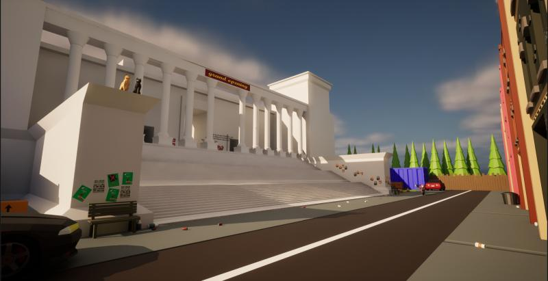
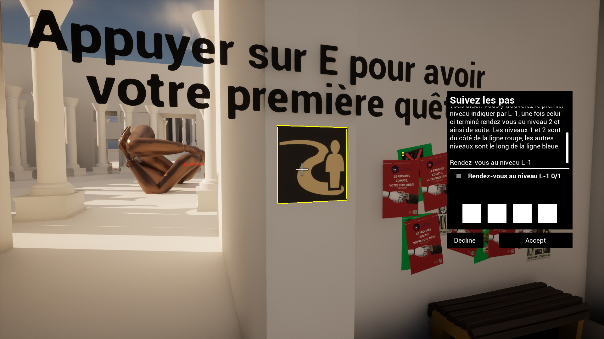
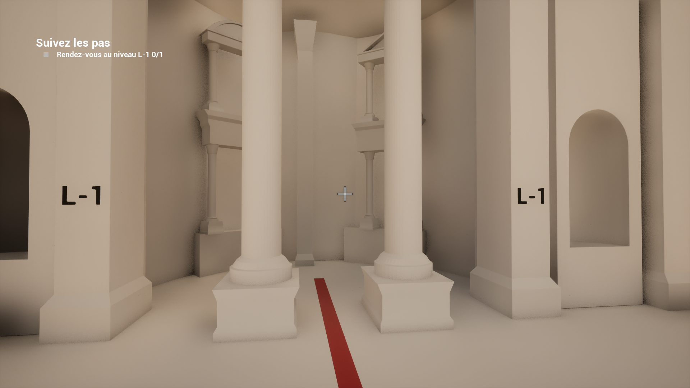
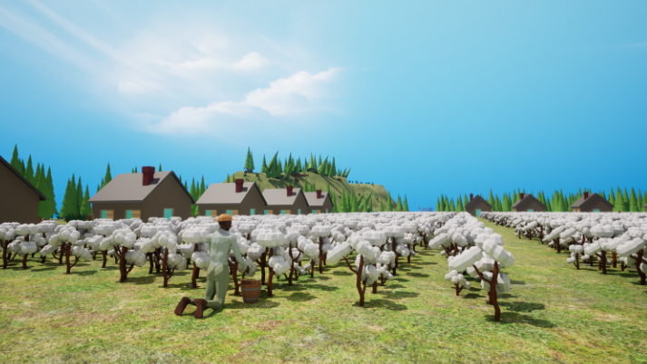
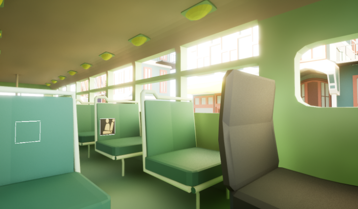

Aperçu du premier niveau

Dans le cadre universitaire, j’ai participé à un projet visant à créer un jeu sur Unreal Engine pour sensibiliser aux combats menés par Martin Luther King et, plus largement, par les Afro-Américains.
Au sein de l’équipe, j'ai été chargé de développer les mécaniques de gameplay en tant que Game Programmer, tout en participant à la création de modèles 3D et à la conception du level design.
Dans un premier temps, j'ai collaboré avec mon équipe pour définir la vision globale du jeu. Par la suite, j'ai concrétisé les éléments de gameplay et de modélisation 3D retenus. Enfin, il a fallu réalisé un build du jeu et préparé sa présentation.


Techniques :
Transversales :
Humaines :


Ce projet sur Unreal Engine m'a permis de développer des compétences en programmation Blueprint, modélisation 3D et level design, tout en travaillant sur une thématique assez importante historiquement.
En équipe, nous avons conçu un jeu visant à sensibiliser aux luttes des Afro-Américains, en intégrant des mécaniques de gameplay et des environnements associés. Ce défi m’a appris à gérer un projet de A à Z, à collaborer et à résoudre des problèmes plutot techniques.
Ce projet a était pour moi une première expérience dans la créatin de jeu vidéo et me conforte dans l’idée dans faire mon métier.